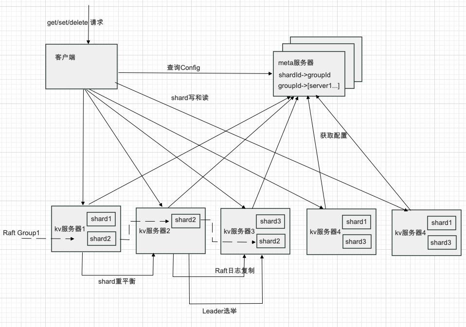

<!DOCTYPE html>
<html lang="en">
<head>
  
    <title>分布式键值存储系统的设计与实现 :: Challen</title>
  
  <meta http-equiv="content-type" content="text/html; charset=utf-8">
<meta name="viewport" content="width=device-width, initial-scale=1.0">
<meta name="description" content="分布式键值存储系统的设计与实现 Author: ChallenAi
摘 要 略
关键词：键值数据库；大数据；数据分片；Raft 算法
Distributed KV Database Design and Implementation ABSTRACT Section omitted
Key words：Distributed Database; Scalable; Data Sharding; Raft Algorithm
目 录 1 绪 论
2 关键技术
2.1 数据分片
2.2 CAP 理论
2.3 共识算法
2.4 LSM 树
3 系统设计和实现
3.1 设计需求
3.2 系统 API
3.3 总体架构
3.4 数据分片
3.5 状态同步和持久化过程
3.6 客户端
3.7 调用过程
4 总结
4.1 学到的经验
4.2 其他工作和可以优化的地方
参考文献
致 谢
1 绪 论 略" />
<meta name="keywords" content="Challen, blog" />
<meta name="robots" content="noodp" />
<link rel="canonical" href="/posts/tech/kvstore/" />


<link rel="stylesheet" href="/assets/style.css">

  <link rel="stylesheet" href="/assets/green.css">


<link rel="apple-touch-icon" href="/img/apple-touch-icon-192x192.png">

  <link rel="shortcut icon" href="/img/favicon/green.png">


<meta name="twitter:card" content="summary" />


<meta property="og:locale" content="en" />
<meta property="og:type" content="article" />
<meta property="og:title" content="分布式键值存储系统的设计与实现">
<meta property="og:description" content="分布式键值存储系统的设计与实现 Author: ChallenAi
摘 要 略
关键词：键值数据库；大数据；数据分片；Raft 算法
Distributed KV Database Design and Implementation ABSTRACT Section omitted
Key words：Distributed Database; Scalable; Data Sharding; Raft Algorithm
目 录 1 绪 论
2 关键技术
2.1 数据分片
2.2 CAP 理论
2.3 共识算法
2.4 LSM 树
3 系统设计和实现
3.1 设计需求
3.2 系统 API
3.3 总体架构
3.4 数据分片
3.5 状态同步和持久化过程
3.6 客户端
3.7 调用过程
4 总结
4.1 学到的经验
4.2 其他工作和可以优化的地方
参考文献
致 谢
1 绪 论 略" />
<meta property="og:url" content="/posts/tech/kvstore/" />
<meta property="og:site_name" content="Challen" />

  <meta property="og:image" content="/">

<meta property="og:image:width" content="2048">
<meta property="og:image:height" content="1024">


  <meta property="article:published_time" content="2021-05-15 07:48:16 &#43;0800 CST" />


</head>
<body class="green">


<div class="container center headings--one-size">

  <header class="header">
  <div class="header__inner">
    <div class="header__logo">
      <a href="/">
  <div class="logo">
    Start
  </div>
</a>

    </div>
    
      <div class="menu-trigger">menu</div>
    
  </div>
  
    <nav class="menu">
  <ul class="menu__inner menu__inner--desktop">
    
      
        
          <li><a href="/posts/tech/page">Tech</a></li>
        
      
        
          <li><a href="/posts/life/page">Life</a></li>
        
      
        
          <li><a href="/posts/art/page">Art</a></li>
        
      
        
          <li><a href="/posts/inspiration/page">Inspiration</a></li>
        
      
        
          <li><a href="/tagslist">Tags</a></li>
        
      
        
          <li><a href="/project">Project</a></li>
        
      
        
          <li><a href="/about">About</a></li>
        
      
      
    

    
    <div class="spacer"></div>
    <ul class="language-selector">
      <ul class="language-selector-current">
          <li>English ▾</li>
      </ul>
      <ul class="language-selector__more hidden">
        
        <li><a href="/">English</a></li>
        
        <li><a href="/cn/">中文</a></li>
        
      </ul>
    </ul>
    
  </ul>

  <ul class="menu__inner menu__inner--mobile">
    
      
        <li><a href="/posts/tech/page">Tech</a></li>
      
    
      
        <li><a href="/posts/life/page">Life</a></li>
      
    
      
        <li><a href="/posts/art/page">Art</a></li>
      
    
      
        <li><a href="/posts/inspiration/page">Inspiration</a></li>
      
    
      
        <li><a href="/tagslist">Tags</a></li>
      
    
      
        <li><a href="/project">Project</a></li>
      
    
      
        <li><a href="/about">About</a></li>
      
    
    
    <hr />
      
        <li>
          <a href="/">English</a>
        </li>
      
        <li>
          <a href="/cn/">中文</a>
        </li>
      
    
  </ul>
</nav>

  
</header>


  <div class="content">
    
<div class="post">
  <h1 class="post-title">
    <a href="/posts/tech/kvstore/">分布式键值存储系统的设计与实现</a></h1>
  <div class="post-meta">
    
      <span class="post-date">
        2021-05-15 
      </span>
    
    
    <span class="post-author">:: ChallenAi</span>
    
    
    <span class="post-tags">
      
      #<a href="/tags/raft/">raft</a>&nbsp;
      
      #<a href="/tags/shard/">shard</a>&nbsp;
      
      #<a href="/tags/database/">database</a>&nbsp;
      
    </span>
    
  </div>

  

  

  <div class="post-content"><div>
        <h1 id="分布式键值存储系统的设计与实现">分布式键值存储系统的设计与实现<a href="#分布式键值存储系统的设计与实现" class="hanchor" ariaLabel="Anchor">&#8983;</a> </h1>
<p>Author: ChallenAi</p>
<h2 id="摘-要">摘 要<a href="#摘-要" class="hanchor" ariaLabel="Anchor">&#8983;</a> </h2>
<p>略</p>
<p>关键词：键值数据库；大数据；数据分片；Raft 算法</p>
<h1 id="distributed-kv-database-design-and-implementation">Distributed KV Database Design and Implementation<a href="#distributed-kv-database-design-and-implementation" class="hanchor" ariaLabel="Anchor">&#8983;</a> </h1>
<h2 id="abstract">ABSTRACT<a href="#abstract" class="hanchor" ariaLabel="Anchor">&#8983;</a> </h2>
<p>Section omitted</p>
<p>Key words：Distributed Database; Scalable; Data Sharding; Raft Algorithm</p>
<h2 id="目-录">目 录<a href="#目-录" class="hanchor" ariaLabel="Anchor">&#8983;</a> </h2>
<p>1 绪 论<br>
2 关键技术<br>
2.1 数据分片<br>
2.2 CAP 理论<br>
2.3 共识算法<br>
2.4 LSM 树<br>
3 系统设计和实现<br>
3.1 设计需求<br>
3.2 系统 API<br>
3.3 总体架构<br>
3.4 数据分片<br>
3.5 状态同步和持久化过程<br>
3.6 客户端<br>
3.7 调用过程<br>
4 总结<br>
4.1 学到的经验<br>
4.2 其他工作和可以优化的地方<br>
参考文献<br>
致 谢</p>
<h3 id="1-绪-论">1 绪 论<a href="#1-绪-论" class="hanchor" ariaLabel="Anchor">&#8983;</a> </h3>
<p>略</p>
<h3 id="2-关键技术">2 关键技术<a href="#2-关键技术" class="hanchor" ariaLabel="Anchor">&#8983;</a> </h3>
<h4 id="21-数据分片">2.1 数据分片<a href="#21-数据分片" class="hanchor" ariaLabel="Anchor">&#8983;</a> </h4>
<p>键值数据库数据分片的方法通常有根据键的范围分片和根据键的散列分片，根据键的范围分片通常给每个分片指定一块连续的键范围，然后将特定键保存到指定分片。根据键的散列分片则有助于数据的平衡分配，避免出现热点，但是也丧失了高效范围查询的能力。本文描述的系统使用了后者(据散列分片)，下文中一个分片直接称为 shard。</p>
<h4 id="22-cap-理论">2.2 CAP 理论<a href="#22-cap-理论" class="hanchor" ariaLabel="Anchor">&#8983;</a> </h4>
<p>对于多副本的数据库来说，如果需要实现线性一致性，那么假如其中一部分副本节点出现网络中断，副本节点宕机之类，那么这些副本节点就不能处理请求，需要等到他们恢复才能响应，这时候可用性就会下降。对可用性较高的场景，我们可能会降低一致性要求，大多数情况下，一致性，可用性和分区容错性难以同时满足，所以需要我们做出权衡。</p>
<h4 id="23-共识算法">2.3 共识算法<a href="#23-共识算法" class="hanchor" ariaLabel="Anchor">&#8983;</a> </h4>
<p>Paxos 能够确保安全性和活性，并且支持集群成员的变更。它的正确性已被证明，并且在正常情况下是高效的。应用实现方面主要有 google 的 chubby，开源的 zookeeper，但是相对原论文做出了很多修改。不幸的是，Paxos 有两个显著的缺点。 第一个缺点是 Paxos 非常难以理解。Paxos 的第二个问题是它不能为构建实际的实现提供良好的基础。于是 Raft 算法被提出用于简化 Paxos 算法。</p>
<p>根据 Raft 的论文，Raft 将问题分解成几个相对独立的，可被解决的、可解释的和可理解的子问题。Raft 算法被我们分成 leader 选举，日志复制，安全性和成员变更几个部分，通过不同几部分的结合，简化了算法整体的复杂性。Raft 算法的基本思想是，Raft 将客户端请求组织成一个序列，称为日志，并确保所有复制服务器看到相同的日志。每个副本按日志顺序执行客户端请求，并将其应用于服务状态的本地副本。由于所有实时副本都看到相同的日志内容，因此它们都以相同的顺序执行相同的请求，因此继续具有相同的服务状态。如果服务器失败但后来恢复，Raft 会负责更新其日志。只要至少有大多数服务器还活着，并且可以相互交谈，Raft 就会继续运行。如果没有这样的多数，Raft 将不会取得进展，但一旦多数人能够再次沟通，Raft 会尽快恢复到它中断的地方。复杂性的降低使得算法的工程实现上更易于维护。同时，Raft 和 Paxos 效率相。因此笔者选用了 Raft 算法。</p>
<h4 id="24-lsm-树">2.4 LSM 树<a href="#24-lsm-树" class="hanchor" ariaLabel="Anchor">&#8983;</a> </h4>
<p>LSM 的思想是对于新到来的数据直接保持在内存中，维持一个有序的结构，事实上开源实现 leveldb 使用跳表维持有序，内存中的结构被叫做 memtable，当 memtable 大小过大则会一层一层序列化成 sstable(Sorted Strings Table)到磁盘中。他们永远不会更新，只会不断向下合并，这个过程叫做 compation，从而提高写入速度，因为不存在插入操作，所以不需要 B 树那样的页分裂。相对的也引入了写放大，查询速度相对较慢等问题，作为权衡，为了解决海量数据存储的问题，在放弃 B 树高效查询的同时也可以引入布隆过滤器来提升部分整体性能，不存在的数据会被布隆过滤器过滤，只有极少量误判的数据则会被击穿到数据库中，在不同层次的 sst 中查找。</p>
<h3 id="3-系统设计和实现">3 系统设计和实现<a href="#3-系统设计和实现" class="hanchor" ariaLabel="Anchor">&#8983;</a> </h3>
<h4 id="31-设计需求">3.1 设计需求<a href="#31-设计需求" class="hanchor" ariaLabel="Anchor">&#8983;</a> </h4>
<p>设计一个高性能的分布式 kv 数据库，支持 get/put/delete 操作。数据分布在不同的服务器上，当数据量变大时，可以通过增加服务器增加数据库的存储容量，同时分散请求到不同的服务器，以便于拆分请求负载提高性能。</p>
<h4 id="32-系统-api">3.2 系统 API<a href="#32-系统-api" class="hanchor" ariaLabel="Anchor">&#8983;</a> </h4>
<p>通过 set(key, val)设置一个键的值。通过 get(key)获取一个键的值。通过 delete(key)删除一个键。
set/get/delete 提供了强一致性，每次调用可以观察到之前所有的调用结果。计一个高性能的分布。</p>
<h4 id="33-总体架构">3.3 总体架构<a href="#33-总体架构" class="hanchor" ariaLabel="Anchor">&#8983;</a> </h4>
<p>数据库主要由三部分构成，分别是 kv 服务器，meta 服务器和客户端。三者之间建立 TCP 连接，通过 RPC 进行通信。在我们的测试系统中，考虑到实验环境硬件和机器资源的限制，兼且 RPC 并不能体现存储系统的核心设计思想，则简单使用 golang 语言的协程(goroutine)来模拟通信，通过直接传送 golang 里的结构体实例来传送消息，也避免处理消息丢失，乱序，应用消息解包等问题。</p>
<p>客户端、meta 服务器和 kv 服务器间建立连接并不会给 meta 服务器带来大量负载压力，TCP 连接是一组长连接，同时由于 meta 服务器本身并不接受请求，只负责调度分片的元信息，同时仅仅通信配置信息而不是实际的读写请求或 Shard 数据，所以 meta 服务器的负载仅仅来自于少量的 kv 服务器传送的少量数据。</p>
<p>整体架构如图 3.1 所示。</p>
<p>
图 3.1 数据库的总体架构</p>
<p>第一部分是实际存储数据的 kv 服务器，数据是被以分片(shard)的方式一段一段的存储在 kv 服务器上的，值得一提的是这里的 shard 因为采用 hash 分片的方式，所以数据是不连续的，所以 api 里没有提供 scan 接口，囿于笔者水平，在散列分片的方式下，没有想到高效的范围查询的实现方式，按照键范围分片的方式因为存储天然有序，则很容易实现 scan 查询。</p>
<p>shard 本身是直接存储在 pebble 里面的，我们可以把它当做优化版的 leveldb，主要优化了多线程 compaction，多线程 flush 等。同时多个 shard 存储在同一个 pebble 引擎实例中以提高性能。</p>
<p>第二部分是 meta 服务器，meta 服务器本身为了容错，使用 Raft 算法创建了 3 个副本，这样只要其中两个保持工作，系统依然能运行。meta 服务器主要存储 shard 所属的 Raft Group 和 Raft Group 与 kv 服务器之间的关系。我们实现了从 shard 的简单调度，期望数据尽可能的平均分布在不同的节点上以避免数据倾斜。当 shard 数量或者 Raft Group 发生变化的时候。shard 会自动重新平衡在不同的 Raft Group 中以重新平衡数据。</p>
<p>对于每个 shard, Raft Group 和 kv 服务器之间的关系，我们封装为一个配置(一个 Config 结构体)，当 Config 发生变动时，创建一个新的配置并将它复制到 meta 服务器的其他节点中来。</p>
<p>meta 服务器也暴露了 Query(configId)接口，用于查询特定 config 下的配置中的 shard 映射。同时也方便客户端缓存 shard 和实际的 kv 服务器之间的映射，这样客户端不需要在每次 get 等请求时都访问 meta 服务器获取 shard 位置信息，提高了系统整体的请求速度。</p>
<p>第三部分是客户端，用于暴露实际的 get/put/delete 接口。从宏观上看，每个查询应该首先找到分片所处的 kv 服务器组，然后通过服务器组的 Leader 通过 AppendEntry RPC 来广播数据，如果数据广播成功，Leader 可以写入数据到我们的 pepple 引擎。同时请求也可以返回。如果广播失败或大部分节点没有返回正确的响应，则不会写入或读取成功数据，读取到的数据很可能是陈旧的，对于这种情况，返回错误的响应给用户。</p>
<p>kv 服务器的结构体伪代码如下：</p>
<div class="highlight"><pre style="color:#f8f8f2;background-color:#272822;-moz-tab-size:4;-o-tab-size:4;tab-size:4"><code class="language-go" data-lang="go"><span style="color:#66d9ef">struct</span> <span style="color:#a6e22e">KVServer</span> {
  <span style="color:#a6e22e">persister</span> <span style="color:#f92672">*</span><span style="color:#a6e22e">Persister</span> <span style="color:#75715e">// 持久化结构体
</span><span style="color:#75715e"></span>  <span style="color:#a6e22e">rf</span> <span style="color:#f92672">*</span><span style="color:#a6e22e">Raft</span> <span style="color:#75715e">// Raft 节点结构体
</span><span style="color:#75715e"></span>  <span style="color:#a6e22e">make_end</span> <span style="color:#66d9ef">func</span>(<span style="color:#66d9ef">string</span>) <span style="color:#f92672">*</span><span style="color:#a6e22e">ClientEnd</span> <span style="color:#75715e">// 和其他 kv 服务器建立连接的函数，用于获取其他 kv 服务器的 shard
</span><span style="color:#75715e"></span>  <span style="color:#a6e22e">gid</span> <span style="color:#66d9ef">int</span> <span style="color:#75715e">// Raft Group Id
</span><span style="color:#75715e"></span>  <span style="color:#a6e22e">mck</span> <span style="color:#f92672">*</span><span style="color:#a6e22e">metaServer</span>.<span style="color:#a6e22e">Client</span> <span style="color:#75715e">// meta 服务器的客户端，用于轮训获取新配置
</span><span style="color:#75715e"></span>  <span style="color:#a6e22e">config</span> <span style="color:#a6e22e">shardmaster</span>.<span style="color:#a6e22e">Config</span> <span style="color:#75715e">// 本 kv 服务器的最新配置，会写明最新应该拥有的 shard
</span><span style="color:#75715e"></span>  <span style="color:#a6e22e">ownShards</span> <span style="color:#a6e22e">IntSet</span> <span style="color:#75715e">// 当前配置的拥有的 shard
</span><span style="color:#75715e"></span>  <span style="color:#a6e22e">migratingShards</span> <span style="color:#a6e22e">HashMap</span>&lt;<span style="color:#a6e22e">configId</span>, <span style="color:#a6e22e">kvpairs</span>&gt; <span style="color:#75715e">// 配置号到需要迁移的数据的映射
</span><span style="color:#75715e"></span>  <span style="color:#a6e22e">waitingShards</span> <span style="color:#a6e22e">HashMap</span>&lt;<span style="color:#a6e22e">shardId</span>, <span style="color:#a6e22e">gid</span>&gt; <span style="color:#75715e">// shard 号到需要请求的 shard 的组号
</span><span style="color:#75715e"></span>  <span style="color:#a6e22e">cleaningShards</span> <span style="color:#a6e22e">HashMap</span>&lt;<span style="color:#a6e22e">configId</span>, <span style="color:#a6e22e">shardId</span>&gt; <span style="color:#75715e">// 需要清除的 shard 号
</span><span style="color:#75715e"></span>  <span style="color:#a6e22e">historyConfigs</span> []<span style="color:#a6e22e">shardmaster</span>.<span style="color:#a6e22e">Config</span> <span style="color:#75715e">// 历史配置的缓存
</span><span style="color:#75715e"></span>  <span style="color:#a6e22e">data</span> <span style="color:#f92672">*</span><span style="color:#a6e22e">Storage</span> <span style="color:#75715e">// pebble 的封装，用于应用数据修改和持久化
</span><span style="color:#75715e"></span>  <span style="color:#a6e22e">cache</span> <span style="color:#66d9ef">map</span>[<span style="color:#66d9ef">int64</span>]<span style="color:#66d9ef">string</span> <span style="color:#75715e">// 请求缓存，防止请求重复
</span><span style="color:#75715e"></span>}
</code></pre></div><h4 id="34-数据分片">3.4 数据分片<a href="#34-数据分片" class="hanchor" ariaLabel="Anchor">&#8983;</a> </h4>
<p>本系统选择了使用通过键的散列分片的方式，这样的设计可以减少数据偏斜，防止少部分分片变成热点。考虑到通过键的范围分区的方式在产生数据偏斜的情况下需要重新分裂分片，实现更为复杂，为了简单起见，我们通过散列键来分片的方式减少数据倾斜。</p>
<p>数据库获取数据分片的方式是客户端根据 shard 函数计算出自己所处的分片号，然后通过 master 获取 shard 所处的 Raft Group 的信息。通过 Raft Group 到具体 kv 服务器组的映射来获取 shard 所处的 kv 服务器。考虑每组到 kv 服务器数量通常不会超过 5 个，所以我们采用直接轮次访问的方式来尝试找到实际的 Raft Group 的 Leader 节点，可以通过缓存 Leader 节点来获得均摊查询次数为一次的优化。</p>
<p>配置和 meta 服务器的结构体伪代码如下：</p>
<div class="highlight"><pre style="color:#f8f8f2;background-color:#272822;-moz-tab-size:4;-o-tab-size:4;tab-size:4"><code class="language-go" data-lang="go"><span style="color:#66d9ef">struct</span> <span style="color:#a6e22e">Config</span> {
  <span style="color:#a6e22e">Num</span> <span style="color:#66d9ef">int</span> <span style="color:#75715e">// 配置 Id
</span><span style="color:#75715e"></span>  <span style="color:#a6e22e">Shards</span> [<span style="color:#a6e22e">NShards</span>]<span style="color:#66d9ef">int</span> <span style="color:#75715e">// HashMap&lt;分片号, Raft Group 号&gt;，因为一个分片只属于一个 Raft Group，所以用数组直接存储。Shards[0]代表 Id 为 0 的分片的 Raft Group 号
</span><span style="color:#75715e"></span>  <span style="color:#a6e22e">Groups</span> <span style="color:#66d9ef">map</span>&lt;<span style="color:#a6e22e">Raft</span> <span style="color:#a6e22e">Group</span> <span style="color:#a6e22e">Id</span>, []<span style="color:#a6e22e">KVServer</span>&gt; <span style="color:#75715e">// HashMap&lt;Raft Group 号, kv 服务器组&gt;
</span><span style="color:#75715e"></span>}
</code></pre></div><div class="highlight"><pre style="color:#f8f8f2;background-color:#272822;-moz-tab-size:4;-o-tab-size:4;tab-size:4"><code class="language-go" data-lang="go"><span style="color:#66d9ef">struct</span> <span style="color:#a6e22e">MetaServer</span> {
  <span style="color:#a6e22e">rf</span> <span style="color:#960050;background-color:#1e0010">\</span><span style="color:#f92672">*</span><span style="color:#a6e22e">raft</span>.<span style="color:#a6e22e">Raft</span> <span style="color:#75715e">// 使用 Raft 维持副本
</span><span style="color:#75715e"></span>  <span style="color:#a6e22e">configs</span> []<span style="color:#a6e22e">Config</span> <span style="color:#75715e">// 存储的配置序列
</span><span style="color:#75715e"></span>  <span style="color:#a6e22e">cache</span> <span style="color:#66d9ef">map</span>&lt;<span style="color:#a6e22e">RequestId</span>, <span style="color:#66d9ef">int</span>&gt; <span style="color:#75715e">// 请求缓存，每个请求一个 Id，防止重复写入
</span><span style="color:#75715e"></span>}
</code></pre></div><p>通过把分片尽可能平均分配在 Raft Group 中来平衡数据的在节点中的存储。</p>
<h4 id="35-状态同步和持久化过程">3.5 状态同步和持久化过程<a href="#35-状态同步和持久化过程" class="hanchor" ariaLabel="Anchor">&#8983;</a> </h4>
<p>数据同步服务通过在多个复制服务器上存储其状态的完整副本来实现容错性。复制允许服务继续运行，即使其某些服务器遇到故障（崩溃或网络中断）。挑战在于，故障可能导致副本保存不同的数据副本。</p>
<p>需要同步状态的有两个地方，一个是 meta 服务器的配置同步，配置是一个简单的结构体，因为数据量只有不到 1KB，所以直接通过 json 序列化保存到文件持久化，第二个是 shard 中 kv 数据操作的复制，我们的每次操作会写入日志，可以把它当做 mysql 的 binlog，我们依靠复制操作日志来实现 kv 服务器的数据同步。我们把封装的 pebble 存储引擎当做 Raft Group 里的状态机，当节点可以提交时，会写入数据到 pebble 引擎持久化数据。</p>
<p>Raft 结构体伪代码如下：
(省略了锁，服务器优雅关闭，其他服务器列表等对 Raft 算法本身无意义的字段以增加可读性)</p>
<div class="highlight"><pre style="color:#f8f8f2;background-color:#272822;-moz-tab-size:4;-o-tab-size:4;tab-size:4"><code class="language-go" data-lang="go"><span style="color:#66d9ef">struct</span> <span style="color:#a6e22e">Raft</span> {
  <span style="color:#a6e22e">persister</span> <span style="color:#f92672">*</span><span style="color:#a6e22e">Persister</span> <span style="color:#75715e">// 持久化结构体
</span><span style="color:#75715e"></span>  <span style="color:#a6e22e">leaderId</span> <span style="color:#66d9ef">int</span> <span style="color:#75715e">// LeaerId，如果自己是 Leader,那么 id 就是自己的 id
</span><span style="color:#75715e"></span>  <span style="color:#a6e22e">currentTerm</span> <span style="color:#66d9ef">int</span> <span style="color:#75715e">// 当前任期号
</span><span style="color:#75715e"></span>  <span style="color:#a6e22e">votedFor</span> <span style="color:#66d9ef">int</span> <span style="color:#75715e">// 当前任期投票给谁，对于 candidate，会投票给自己
</span><span style="color:#75715e"></span>  <span style="color:#a6e22e">commitIndex</span> <span style="color:#66d9ef">int</span> <span style="color:#75715e">// 提交号，复制到大部分节点就可以提交
</span><span style="color:#75715e"></span>  <span style="color:#a6e22e">lastApplied</span> <span style="color:#66d9ef">int</span> <span style="color:#75715e">// 应用号，提交号更新则会立刻应用到状态机
</span><span style="color:#75715e"></span>  <span style="color:#a6e22e">logIndex</span> <span style="color:#66d9ef">int</span> <span style="color:#75715e">// 最后的日志号
</span><span style="color:#75715e"></span>  <span style="color:#a6e22e">log</span> []<span style="color:#a6e22e">Entry</span> <span style="color:#75715e">// 日志序列
</span><span style="color:#75715e"></span>  <span style="color:#a6e22e">nextIndex</span> []<span style="color:#66d9ef">int</span> <span style="color:#75715e">// 作为 Leader 时，维护的其他节点的下一个日志号
</span><span style="color:#75715e"></span>  <span style="color:#a6e22e">matchIndex</span> []<span style="color:#66d9ef">int</span> <span style="color:#75715e">// 作为 Leader 时，维护的其他节点的匹配的日志号
</span><span style="color:#75715e"></span>  <span style="color:#a6e22e">electionTimer</span> <span style="color:#f92672">*</span><span style="color:#a6e22e">Timer</span> <span style="color:#75715e">// 选举计时器
</span><span style="color:#75715e"></span>  <span style="color:#a6e22e">heartbeatTimer</span> <span style="color:#960050;background-color:#1e0010">\</span><span style="color:#f92672">*</span><span style="color:#a6e22e">Timer</span> <span style="color:#75715e">// 作为 Leader 时，心跳计时器
</span><span style="color:#75715e"></span>}
</code></pre></div><p>通过实现 raft 论文中描述的系统，实现了 Raft:VoteRequest, Raft:AppendEntry 和 Raft:InstallSanpshot 三个主要 RPC，其中 AppendEntry 同时用于日志广播和维持心跳阻止 follower 发起投票。</p>
<h4 id="36-客户端">3.6 客户端<a href="#36-客户端" class="hanchor" ariaLabel="Anchor">&#8983;</a> </h4>
<p>客户端会通过 shard(key)函数获取键所处的分片，这是一个简单的哈希函数，然后通过缓存自 meta 服务器的配置信息找出键所处的 kv 服务器，最后直接和 kv 服务器通信，寻找 Leader，通过 Leader 提交请求需要的操作。在一致性要求不高的请求中，读操作可以访问任意一个服务器，而写操作只能写入 Leader，但是本系统都会从 Leader 读取以保证线下一致性。客户端的配置信息是初始化的时候获取的，如果某个请求读取完所有的 kv 服务器仍然没有发现 leader，客户端则会重新从 meta 服务器中获取配置信息。</p>
<h4 id="37-调用过程">3.7 调用过程<a href="#37-调用过程" class="hanchor" ariaLabel="Anchor">&#8983;</a> </h4>
<h4 id="371-外部请求主要过程">3.7.1 外部请求主要过程：<a href="#371-外部请求主要过程" class="hanchor" ariaLabel="Anchor">&#8983;</a> </h4>
<p>客户端操作：</p>
<ol>
<li>首先根据键计算出所处分片</li>
<li>生成 RequestId 来防止重复请求</li>
<li>从缓存的配置中找到 shard 所属 Raft Group，并找到 kv 服务器列表</li>
<li>依次请求 kv 服务器列表，尝试获取值
kv 服务器(Leader)操作：</li>
<li>如果不是 Leader，直接拒绝(可以通过代理请求或者返回 LeaderId 来优化)</li>
<li>对比 RequestId 是否重复，如果已经请求过了，阻止重复写入</li>
<li>根据自己的配置检查自己是否拥有该 key 的 shard</li>
<li>写入一个 raft 日志到日志序列(对于读请求需要写入一个空日志用于解决脑裂陈旧数据问题，下文会介绍可能的优化方法)</li>
<li>广播日志给 follower 节点，携带之前的日志号和日志任期号</li>
<li>得到大多数节点的写入回复则会提交</li>
<li>从 pebble 中获取该键，对于写入操作，这里需要提交应用号，但是读取操作在提交后可以直接返回值数据
3.7.2 新增或移除 Raft Group 的主要过程：
(查询配置的请求基本相同)</li>
<li>请求 meta 服务器</li>
<li>对比 RequestId 是否重复，如果已经请求过了，阻止重复写入</li>
<li>调度 shard，以便于 shard 平均分配在 Raft Group 中，保存为新的配置</li>
<li>将新的配置写入 raft 的配置日志序列</li>
<li>广播日志给 follower 节点，携带之前的日志号和日志任期号</li>
<li>得到大多数 meta 节点的写入回复则会提交</li>
<li>更新 MetaServer 的 config 字段，标注为当前最新的配置
3.7.3 kv 服务器均衡 shard 的过程：</li>
<li>定时轮训 MetaServer 的配置信息，如果有新的配置信息，则更新本地的配置</li>
<li>如果发现配置变动，diff 自身拥有的 shard 和新配置里描述的 shard</li>
<li>如果 shard 不一致，将新的 shard 放到请求队列</li>
<li>从其他 kv 服务器(组 Leader)拉取需要的 shard，通过遍历 pebble 该 shard 里的 kv 并序列化对来打包 shard 传送(一种可能的优化方法是直接传送 sstable)</li>
</ol>
<h3 id="4-总结">4 总结<a href="#4-总结" class="hanchor" ariaLabel="Anchor">&#8983;</a> </h3>
<h4 id="41-学到的经验">4.1 学到的经验<a href="#41-学到的经验" class="hanchor" ariaLabel="Anchor">&#8983;</a> </h4>
<p>对于 master/slave 结构的系统，如果我们的 master 有很多请求或者写入操作，那么他很有可能变成瓶颈，但是我们依然可以通过其他节点处理外部请求的方式实现接近于线性的伸缩性。</p>
<p>散列分片的方式虽然更容易实现数据负载均衡分配，但是也可能给范围查询带来问题，需要跨多个分片合并查询，降低了系统性能。</p>
<p>这些问题在系统设计的过程中多次遇到，也因此做了很多权衡，可能很多时候不是最佳的实现。</p>
<h4 id="42-其他工作和可以优化的地方">4.2 其他工作和可以优化的地方<a href="#42-其他工作和可以优化的地方" class="hanchor" ariaLabel="Anchor">&#8983;</a> </h4>
<p>该系统的总体架构开始主要参考了 BigTable 论文实现，但是实现上与 BigTable 有很多方面的区别，第一，该系统没有采用 chubby(开源实现对应为 zookeeper)去存储关键元数据，而是采用 Raft 算法实现多个副本代替，</p>
<p>第二，Tablet Server 中的 Tablet 实际上是保存在 GFS 上的 chunk，依靠 GFS 提高可用性，但是也损失了一定的性能，而我们通过 Raft Group 的方式实现 shard 的多副本机制提高可用性。</p>
<p>第三，BigTable 中数据存储于 sst 中，sst 是一个排序表，对应的开源实现是 LSM 结构的 leveldb，leveldb 适用于多写少读的场景，但是写放大问题饱受诟病，pebble 可以看做是一个 go 版本的 leveldb，也是 CockroachDB 的存储引擎，它优化了 leveldb 的一些问题，考虑到存储引擎实现的复杂程度较高，笔者直接使用了该存储引擎来持久化数据。</p>
<p>最后，考虑到工作量也并没有能实现 BigTable 里描述的多版本的数据存储，因此数据模型只有两个维度，也不需要考虑版本的垃圾回收。</p>
<p>该数据库尚有很多可以优化的地方，对于客户端查询，可以尝试缓存 Leader 信息，客户端每次查询特定 Raft Group 的时候，通过轮次查询获得特定的 Group 的 Leader 节点信息，此时缓存 Leader 节点信息，因为 Leader 一般不会不断更新，所以可以每次客户端查询的均摊次数可以接近一次。</p>
<p>根据 Raft 算法论文客户端部分的描述，可以实现基于租约的方式来阻止脑裂下的陈旧数据问题，这样可以提高整体的性能，目前的做法是将读类型的请求写入 log 通过 Raft 提交，提交之后一定能获取最新的数据，这样每次读起码需要获取过半节点中最慢节点的一次请求响应延迟。这样的解决方法虽然可以实现线性一致性，但是性能不佳。一种可能的更简单的优化方法是广播一个空 RPC 来确认自己仍然是 Leader，这样可以避免提交和存储到日志这些不必要的操作。</p>
<p>使用基于范围的分片可以实现高效的范围查询，同时也可以在分片过大的时候动态的分裂分片，本系统里只是简单的配置固定数量的分片，如果按照键范围分片则需要动态分割分片。然后依靠已经实现的 meta 服务器调度，将新分片转移到其他 Raft Group。</p>
<p>最后可以实现一些简单的监控系统，以收集分片，每秒接受的 RPC 数量，Leader 转移的次数等信息，便于更好的了解系统运行状态。</p>
<h2 id="参考文献">参考文献<a href="#参考文献" class="hanchor" ariaLabel="Anchor">&#8983;</a> </h2>
<p>(忽略了一些毫无价值，受某些因素影响放上去的论文 :)</p>
<p>[1] Fay Chang, Jeffrey Dean, Sanjay Ghemawat, Wilson C. Hsieh, Deborah A. Wallach, Michael Burrows, Tushar Chandra, Andrew Fikes, Robert Gruber: Bigtable: A Distributed Storage System for Structured Data[J]. OSDI 2006:205-218.<br>
[2] Diego Ongaro and John Ousterhout Stanford University. In Search of an Understandable Consensus Algorithm (Extended Version)[J]. 2013．<br>
[3] 陈陆. 分布式键值存储引擎的研究与实现[D]. 江苏科技大学，2016.<br>
[4] 赵江. 基于 LevelDB 的分布式数据库的研究与实现[D].国防科学技术大学，2019.<br>
[5] .<br>
[6] .<br>
[7] Sanjay Ghemawat, Howard Gobioff, and Shun-Tak Leung Google. The Google File System[J]. 2003.<br>
[8] VoltDB. VoltDB Resources[OL].2012.<br>
[9] Patrick Hunt and Mahadev Konar Yahoo! Grid, Flavio P. Junqueira and Benjamin Reed Yahoo! Research. ZooKeeper: Wait-free coordination for Internet-scale systems[J]. 2005.<br>
[10] .<br>
[11] .<br>
[12] 涂腾飞. Go 语言中的并发问题研究[D].北京邮电大学，2019.<br>
[13] .</p>

      </div></div>

  
  
<div class="pagination">
    <div class="pagination__title">
        <span class="pagination__title-h">Read other posts</span>
        <hr />
    </div>
    <div class="pagination__buttons">
        
        
        <span class="button next">
            <a href="/posts/life/blog/">
                <span class="button__text">Create a Beatiful Blog with Hugo</span>
                <span class="button__icon">→</span>
            </a>
        </span>
        
    </div>
</div>

  

  

</div>

  </div>

  
    <footer class="footer">
  <div class="footer__inner">
    <div class="copyright copyright--user">
      <span>© 2021 ChallenAi,</span>
      <div class="copyright">
        <span>LICENSE: <a href="https://creativecommons.org">CC BY-ND 4.0</a></span>
      </div>
    </div>
  </div>
</footer>

<script src="/assets/main.js"></script>
<script src="/assets/prism.js"></script>


  <script src="/assets/languageSelector.js"></script>


  
</div>

</body>
</html>
